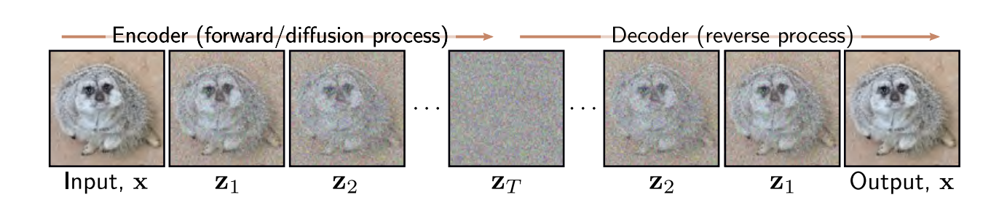
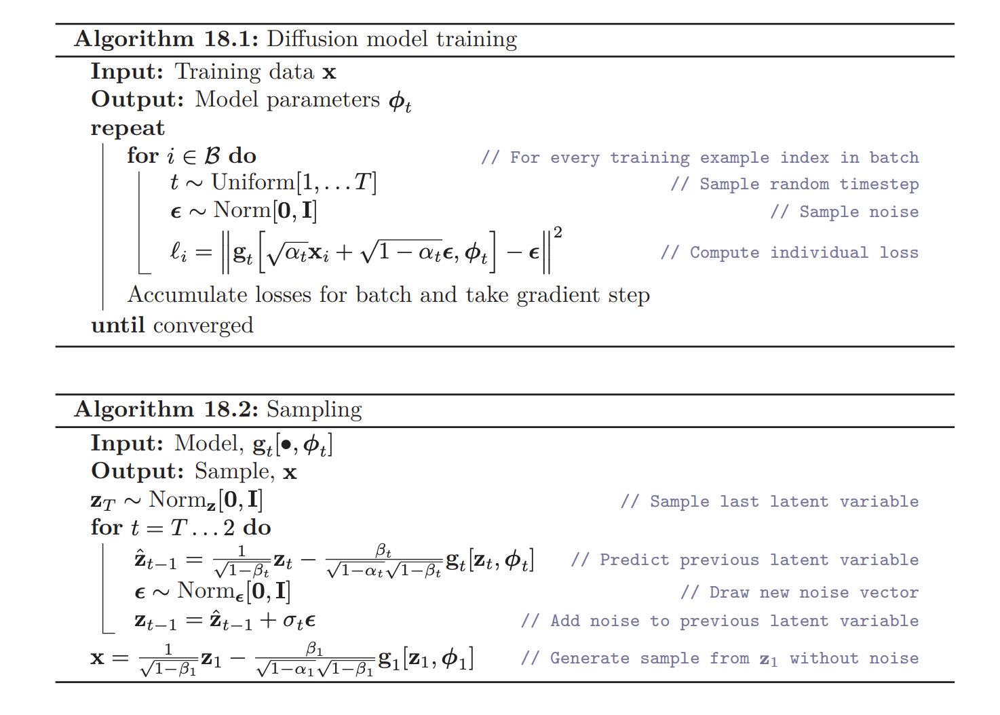
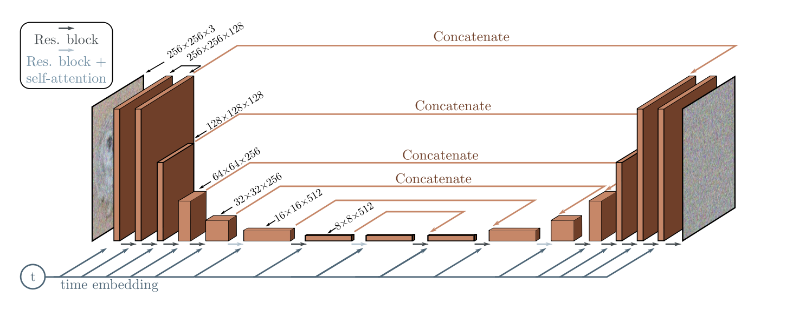
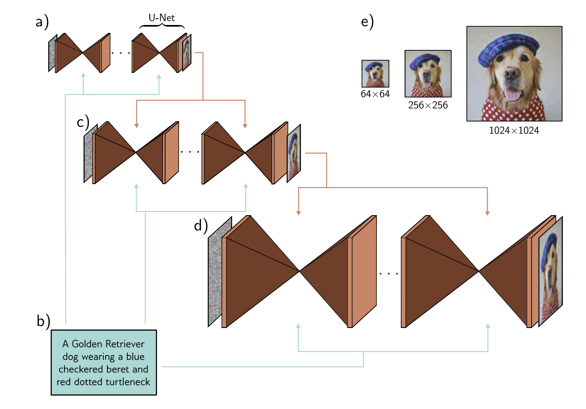

C18.Diffusion models
发布于 2025年7月23日 | 分类: 深度学习
先前的3个章节中: GAN在微调后有好的效果但不能给出概率, normalizing flow限制条件严格且计算复杂, VAE的损失函数只能计算一个下界.
diffusion model 和VAE类似, 但diffusion model的encoder是指定的.
1.符号与映射思路
符号 encoder将输入$\bold x$进行一连串不改变维度的映射:
$$\bold x\rightarrow \bold z_1\rightarrow \bold z_2\rightarrow \cdots\rightarrow \bold z_T$$
使得最终结果的分布$q(z_T)$与$q(z_T|x)$均为标准正态分布.(使用与VAE相同的encoder概率密度符号q)
而decoder则从encoder的输出$\bold z_T$开始, 进行一连串的映射:
$$\bold z_T\rightarrow \bold z_{T-1}\rightarrow \cdots\rightarrow \bold z_1 \rightarrow \bold x$$
如下图:

Rmk 与VAE不同, 这里的z的维度和x必须一样, 而且这里还有多个z.(这里的求Pr(x)的积分空间变得十分大, 这里所有z的维度是x维度的T倍!)
2.Encoder
encoder没有需要学习的参数, 只有超参数$\beta_i$用于调节diffusion得速度:
$$z_1 = \sqrt{1-\beta_1}\cdot x + \sqrt\beta_1 \cdot \epsilon_1\\
z_t = \sqrt{1-\beta_t}\cdot z_{t-1} + \sqrt\beta_t \cdot \epsilon_1\\$$
其中, epsilon是标准正态分布的采样.
上述过程对应的概率密度函数变化过程如下:
$$q(z_1|x) = \mathcal N_{z_1}[\sqrt{1-\beta_1}x, \beta_1\bold I]\\
q(z_t|z_{t-1}) = \mathcal N_{z_t}[\sqrt{1-\beta_t}z_{t-1}, \beta_t\bold I]\\$$
由于每一步都仅仅由上一步决定, 联合概率$q(z_{1...T}|x)$可以根据条件概率展开得:
$$q(z_{1...T}|x) = q(z_1|x)\prod_{t=2}^T q(z_t|z_{t-1})$$
Rmk 条件概率$q(z_t|z_{t-1})$只是一个简单的给采样值增加一点误差的正态分布, 和$Pr(x), q(z_1)...q(z_T)$相差甚远.
2.1.diffusion kernel $q(z_t|x)$
prop $q(z_t|x)$可以直接写出来:
$$q(z_t|x)=\mathcal N_{z_t}[\sqrt\alpha_t\cdot x,(1-\alpha_t)\bold I]\\
\alpha_t = \prod_{s=1}^t(1-\beta_s)$$
proof
$$\begin{aligned}
z_1 &= \sqrt{1-\beta_1}\cdot x + \sqrt\beta_1 \cdot \epsilon_1\\
z_2 &= \sqrt{1-\beta_2}\cdot z_{1} + \sqrt\beta_2 \cdot \epsilon_2\\
&= \sqrt{1-\beta_2}\cdot (\sqrt{1-\beta_1}\cdot x + \sqrt\beta_1 \cdot \epsilon_1) + \sqrt\beta_2 \cdot \epsilon_2\\
&= \sqrt{1-\beta_2}\sqrt{1-\beta_1}\cdot x + \sqrt{1-\beta_2}\sqrt\beta_1 \cdot \epsilon_1 + \sqrt\beta_2 \cdot \epsilon_2\\
&= \sqrt{1-\beta_2}\sqrt{1-\beta_1}\cdot x + \sqrt{1-(1-\beta_1)(1-\beta_2)}\cdot\epsilon \\
\end{aligned}$$
其中新的$\epsilon$仍服从标准正态分布, 最后一行epsilon合并见Problem18.2
而后由归纳法立得.
$\blacksquare$
2.2.marginal distribution $q(z_t)$
原本的边缘概率需要对联合概率积分:
$$q(z_t) = \iint q(z_{1...t},x)dz_{1...t-1}dx$$
有了上一节的prop, 可以直接得到:
$$q(z_t) = \int q(z_t|x)Pr(x)dx$$
当然, 由于$Pr(x)$是未知的, 所以不能真的写出来.
2.3.Conditional distribution $q(z_{t-1}|z_t)$
相反方向的概率可以用bayes‘ rule写出来:
$$q(z_{t-1}|z_t) = \frac{q(z_t|z_{t-1})q(z_{t-1})}{q(z_{t})}$$
当然, 当$q(z_{t-1})$未知时, 是写不出来的.
2.4.Conditional diffusion distribution $q(z_{t-1}|z_t,x)$
虽然无法真正写出$q(z_{t-1}|z_t)$, 但由于可以写出$q(z_{t-1}|x)$, 我们可以真正写出$q(z_{t-1}|z_t,x)$的表达式:
$$\begin{aligned}
q(z_{t-1}|z_t,x) &= \frac{q(z_t|z_{t-1},x)q(z_{t-1}|x)}{q(z_{t}|x)} \\
&= \frac{q(z_t|z_{t-1})q(z_{t-1}|x)}{q(z_{t}|x)}\\
&\propto q(z_t|z_{t-1})q(z_{t-1}|x)\\
&= \mathcal N_{z_t}[\sqrt{1-\beta_t}z_{t-1}, \beta_t\bold I] \mathcal N_{z_{t-1}}[\sqrt{\alpha_{t-1}}\cdot x, (1-\alpha_{t-1})\bold I] \\
&\propto \mathcal N_{z_{t-1}}[\frac{1}{\sqrt{1-\beta_t}}z_{t}, \frac{\beta_t}{1-\beta_t}\bold I] \mathcal N_{z_{t-1}}[\sqrt{\alpha_{t-1}}\cdot x, (1-\alpha_{t-1})\bold I] \\
&\propto \mathcal N_{z_{t-1}}[\frac{1-\alpha_{t-1}}{1-\alpha}\sqrt{1-\beta_t}z_t+\frac{\sqrt{\alpha_{t-1}}\beta_t}{1-\alpha_t}x, \frac{\beta_t(1-\alpha_{t-1})}{1-\alpha_t}\bold I]
\end{aligned}$$
其中, 第一行到第二行用到了:$q(z_t|z_{t-1},x)=q(z_t|z_{t-1})$, 这是由于$z_t$只和$z_{t-1}$有关.
第四行到第五行用到了:
$$\cal N$$
最后一行用到了:
$$\cal N$$
3.Decoder model
encoder最终得到的$z_T$是初始分布$Pr(x)$的一个样本$x$经过一步步的高斯误差叠加得到的, 我们直接假设$z_T$的分布可以写为:
$$Pr(z_T)=\mathcal N_{z_T}[\bold 0,\bold I]$$
然后将条件概率分布$Pr(z_{t-1}|z_t)$的均值用神经网络拟合:
$$Pr(z_{t-1}|z_t,\phi) = \mathcal N_{z_{t-1}}[f_t[z_t,\phi_t],\sigma_t^2\bold I]\\
Pr(x|z_1,\phi) = \mathcal N_{x}[f_1[z_1,\phi_1],\sigma_1^2\bold I]\\$$
而生成的过程直接层层采样, 首先通过$Pr(z_T)$采样得到$z_T$, 然后再代入分布$Pr(z_{T-1}|z_T)$, 并对其再进行一次采样得到$z_{T-1}$, 在经过$T+1$次采样后得到$x$.
Rmk 正态分布只不过是围绕均值增加了一点随机性罢了, 均值$f_t[z_t,\phi_t]$才是目标
Rmk 生成的过程没有用到encoder的结果$z_T$, 而是用采样得到$z_T$, 因为本来就已经变成正态分布了. encoder的结果主要用在训练阶段.
4.Training
decoder有联合概率:
$$Pr(x,z_{1...T}|\phi_{1...T})=Pr(x|z_1,\phi_1)\cdot \prod_{t=2}^T Pr(z_{t-1}|z_t,\phi_t) \cdot Pr(z_T)$$
则边缘概率$Pr(x|\phi_{1...T})$有:
$$Pr(x|\phi_{1...T})=\int Pr(x,z_{1...T}|\phi_{1...T})dz_{1...T}$$
则对于多个数据$\{x_i\}_{i=1}^I$有:
$$\begin{aligned}
\hat \phi_{1...T} &= \arg\max_{\phi_{1...T}}\left[ \sum_{i=1}^I \log(Pr(x_i|\phi_{1...T})) \right]\\
&= \arg\max_{\phi_{1...T}}\left[ \sum_{i=1}^I \log\int Pr(x_i,z_{1...T}|\phi_{1...T})dz_{1...T} \right]
\end{aligned}$$
这和VAE很像, 不同之处在于VAE只对一个$\bold z$做一次积分, 而这里要对$T$个$\bold z$做$T$次积分.
4.1.Evidence lower bound(ELOB)
和VAE类似, 先引入辅助分布--也就是encoder的分布$q(z_{1...T}|x)$, 再使用Jensen’s inequality:
$$\begin{aligned}
\log(Pr(x_i|\phi_{1...T})) &= \log \left[ \int Pr(x_i,z_{1...T}|\phi_{1...T})dz_{1...T} \right] \\
&= \log \left[ \int q(z_{1...T}|x) \frac{ Pr(x_i,z_{1...T}|\phi_{1...T})}{q(z_{1...T}|x)}dz_{1...T} \right] \\
&\ge \int q(z_{1...T}|x) \log\left[ \frac{ Pr(x_i,z_{1...T}|\phi_{1...T})}{q(z_{1...T}|x)} \right] dz_{1...T} \\
\end{aligned}$$
上述$q(z_{1...T}|x)$需要尽可能靠近posterior使得放缩更小, 但和VAE不同的是, $q(z_{1...T}|x)$没有需要学习的参数, 只能靠合适的超参数$\beta$. 最终有:
$$ELBO[\phi_{1...T}]=\int q(z_{1...T}|x) \log\left[ \frac{ Pr(x_i,z_{1...T}|\phi_{1...T})}{q(z_{1...T}|x)} \right] dz_{1...T}$$
4.2.simplify ELBO
将ELOB中的log项进行展开:
$$\begin{aligned}
\log\left[ \frac{ Pr(x_i,z_{1...T}|\phi_{1...T})}{q(z_{1...T}|x)} \right]
&=\log\left[ \frac{ Pr(x|z_1,\phi_1)\cdot \prod_{t=2}^T Pr(z_{t-1}|z_t,\phi_t) \cdot Pr(z_T)}{q(z_1|x) \prod_{t=2}^T q(z_{t}|z_{t-1})} \right]\\
&=\log\left[\frac{ Pr(x|z_1,\phi_1)}{q(z_1|x)} \right] + \log\left[\frac{ \prod_{t=2}^T Pr(z_{t-1}|z_t,\phi_t)}{\prod_{t=2}^T q(z_{t}|z_{t-1})} \right] + \log\left[Pr(z_T) \right]
\end{aligned}$$
再代入贝叶斯法则:(转换一下顺序, 方便进行decode)
$$q(z_t|z_{t-1}) = q(z_t|z_{t-1},x)=\frac{q(z_{t-1}|z_t,x)q(z_t|x)}{q(z_{t-1})}$$
原式有:
$$\log\left[ \frac{ Pr(x_i,z_{1...T}|\phi_{1...T})}{q(z_{1...T}|x)} \right]=\\
\approx \log(Pr(z|z_1,\phi_1))+\sum_{t=2}^T\log\left[\frac{Pr(z_{t-1}|z_t,\phi_t)}{q(z_{t-1}|z_t,x)} \right]$$
最终得:
$$\begin{aligned}
ELBO&[\phi_{1...T}]\\
&= \\
&...\\
&= \mathbb E_{q(z_1|x)}[\log(Pr(x|z_1,\phi_1))]-\sum_{t=2}^T\mathbb E_{q(z_t|x)}[D_{KL}[ q(z_{t-1}|z_t,x) \| Pr(z_{t-1}|z_t,\phi_t) ]]
\end{aligned}$$
4.3.Analyzing ELBO
将前几节弄出来的表达式代入ELBO
ELBO的第一项期望的内部有表达式:
$$Pr(x|z_1,\phi_1) = \mathcal N_{x}[f_1[z_1,\phi_1],\sigma_1^2\bold I]$$
注意是概率分布$q(z_1|x)$的期望, 如果使用Monte Carlo需要对$q(z_1|x)$取样$z_1$.
ELBO的第二项期望内部有表达式:
$$\begin{aligned}
Pr(z_{t-1}|z_t,\phi) &=& \mathcal N_{z_{t-1}}[f_t[z_t,\phi_t],\sigma_t^2\bold I]\\
q(z_{t-1}|z_t,x) &\propto& \mathcal N_{z_{t-1}}[\frac{1-\alpha_{t-1}}{1-\alpha}\sqrt{1-\beta_t}z_t+\frac{\sqrt{\alpha_{t-1}}\beta_t}{1-\alpha_t}x, \frac{\beta_t(1-\alpha_{t-1})}{1-\alpha_t}\bold I]
\end{aligned}$$
直接把正比符号当成等于, 两个正态分布的KL divergence由公式可得:
$$D_{KL}[]=$$
4.4.loss function
注意前面是argmax phi, 这里加一个负号:
$$L[\phi_{1...T}] = \sum_{i=1}^I\Bigg( ( -\log(\mathcal N_{x_i}[f_1[z_{i1},\phi_1],\sigma^2\bold I]) \\
+\left. \sum_{t=2}^T \frac{1}{2\sigma^2_t}\left\| \frac{1-\alpha_{t-1}}{1-\alpha_t}\sqrt{1-\beta_t}z_{it} +\frac{\sqrt{\alpha_{t-1}}\beta_t}{1-\alpha_t} x_i -f_t[z_{it},\phi_t]\right\|^2 \right)$$
4.5.训练过程
①首先得到大量样本$\bold x$ ②通过diffusion kernel公式encode, 采样得到每个$\bold z_i$ ③代入模型$\bold f_t[\bold z_t,\boldsymbol\phi_t]$降低上节的损失函数.
5.Reparameterization of loss function
重新组织参数有利于学习
5.1.Reparameterization of target
由diffusion kernel有:
$$z_t=\sqrt{\alpha_t}\cdot x+\sqrt{1-\alpha_t}\cdot \epsilon$$
立得:
$$x=\frac{1}{\sqrt \alpha_t}-\frac{\sqrt{1-\alpha_t}}{\sqrt{\alpha_t}}\epsilon$$
则损失函数中的一项有:
$$\frac{1-\alpha_{t-1}}{1-\alpha_t}\sqrt{1-\beta_t}z_{t} +\frac{\sqrt{\alpha_{t-1}}\beta_t}{1-\alpha_t} x=...$$
5.2.Reparameterization of network
将模型$\hat z_{t-1}=f_t[z_t,\phi_t]$用新的模型代替:
$$f_t[z_t,\phi_t] = \frac{1}{\sqrt{1-\beta_t}}z_t-\frac{\beta_t}{\sqrt{1-\alpha_t}\sqrt{1-\beta_t}}g_t[z_t,\phi_t]$$
这样, 损失函数可以变得很简单:
$$L[]=...$$
6.Implementation
有了reparameterization后, 事情变得十分简单:

简直和训练正常的神经网络一样. (其实是一样的对吗, 只是中间有很多个正态分布, 难以置信, 这就是最终的模型图像吗)
6.1.U-Net
U-Net作为$f(z_t|z_{t-1})$放到diffusion model中

添加一个time embedding使得其更像diffusion, 将time embedding通过一个浅层网络后在每一次大小改变时加进每一个channel中.
6.2.diffusion kernel(粗糙)
使用一些方法减少一些随机性, 可以提高encode的效率
6.3.conditional generation
当数据自带label, 可以运用一下.
1.训练$f(c|z_i)$
2.将c类似于U-Net中的time embedding的方法加入到网络中
6.4.generation quality
generative model生成高质量图像都需要有一定技巧.
1.超参数$\sigma, \beta$都需要微调
2.Cascaded conditional generation, 先训练低像素的图像, 再将训练好的模型插入到更大的模型中

§Problems
Problem18.2
Consider the variable:
$$z=a\cdot \epsilon_1 + b\cdot \epsilon_2$$
where both $ϵ_1$ and $ϵ_2$ are drawn from independent standard normal distributions with mean zero and unit variance. Show that:
$$\mathbb E[z]=0\\
Var[z]=a^2+b^2$$
so we could equivalently compute $z = \sqrt{a^2 + b^2} · ϵ$ where $ϵ$ is also drawn from a standard normal distribution.
Proof
$$\begin{aligned}
\mathbb E[z]&=\mathbb E[a\cdot \epsilon_1 + b\cdot \epsilon_2]\\
&= a\mathbb E[\epsilon_1] + b\mathbb E [ \epsilon_2]\\
&= 0
\end{aligned}$$
and:
$$\begin{aligned}
Var[z]&=Var[a\cdot \epsilon_1 + b\cdot \epsilon_2]\\
&=a^2Var[\epsilon_1]+b^2 Var[\epsilon_2]\\
&=a^2+b^2
\end{aligned}$$
$\blacksquare$
Problem18.4
Prove the relation:
$$\mathcal N_\bold v[\bold A\bold w,\bold B]\propto \mathcal N_\bold w[(\bold A^T\bold B^{-1}\bold A)^{-1}\bold A^T\bold B^{-1}\bold v, (\bold A^T\bold B^{-1}\bold A)^{-1}]$$
Proof
$$Pr(v)=\frac{1}{|B|^{1/2}(2\pi)^{d/2}}\exp[-\frac12(v-Aw)^TB^{-1}(v-Aw)]\\
w=Av$$
where $w=g(v)=Av$, then:
$$\begin{aligned}
f_W(w)&=f_V(h(w))h'(w)\\
&= \frac{1}{|B|^{1/2}(2\pi)^{d/2}}\exp[-\frac12(A^{-1}w-AAv)^TB^{-1}(A^{-1}w-AAv)] A^{-1}\\
\end{aligned}$$
$\color{red}{\bold {Answer}}$ w已经在表达式当中, 不需要进行映射, 只需要对密度函数的表达式做一点处理, 把副元变成主元.
$$\begin{aligned}
Pr(\bold v)&=\kappa_1 \exp[-\frac12(v-Aw)^TB^{-1}(v-Aw)]\\
&=\kappa_1 \exp[-\frac12(v^TB^{-1}v-2v^TB^{-1}Aw+w^TA^TB^{-1}Aw )]\\
&=\kappa_2 \exp[-\frac12(-2v^TB^{-1}Aw+w^TA^TB^{-1}Aw )]\\
\end{aligned}$$
上式最后一步将第一项移到外面, 被系数吸收, 下面继续
注意 协方差阵B是对称阵:
$$\begin{aligned}
Pr(\bold v)&=\kappa_2 \exp[-\frac12(-2v^TB^{-1}Aw+w^TA^TB^{-1}Aw )]\\
&=\kappa_3 \exp[-\frac12(v^TB^{-1}A(A^TB^{-1}A)A^TB^{-1}v -2v^TB^{-1}Aw+w^TA^TB^{-1}Aw )]\\
&=\kappa_3 \exp[-\frac12( w-(A^TB^{-1}A)^{-1}A^TB^{-1}v )^T(A^TB^{-1}A)(w-(A^TB^{-1}A)^{-1}A^TB^{-1}v)]\\
&\propto \kappa_4 \exp[-\frac12( w-(A^TB^{-1}A)^{-1}A^TB^{-1}v )^T(A^TB^{-1}A)(w-(A^TB^{-1}A)^{-1}A^TB^{-1}v)]\\
&=Pr(\bold w)
\end{aligned}$$
立得, 变量$\bold w$满足分布$ \mathcal N_\bold w[(\bold A^T\bold B^{-1}\bold A)^{-1}\bold A^T\bold B^{-1}\bold v, (\bold A^T\bold B^{-1}\bold A)^{-1}]$.
$\blacksquare$
Problem18.5
Prove the relation:
$$\mathcal N_\bold x[\bold a,\bold A]\mathcal N_\bold x[\bold b,\bold B] \propto \mathcal N_\bold x[(\bold A^{-1}+\bold B^{-1})^{-1}(\bold A^{-1}\bold a+\bold B^{-1}\bold b), (\bold A^{-1}+\bold B^{-1})^{-1}]$$
Proof
$$\begin{aligned}
f_1(x)\cdot f_2(x)&=\kappa_1 \exp[-\frac12(x-a)^TA^{-1}(x-a)] \cdot \kappa_2\exp[-\frac12(x-b)^TB^{-1}(x-b)]\\
&=\kappa_3\exp[(x-a)^TA^{-1}(x-a)+(x-b)^TB^{-1}(x-b)]\\
&=\kappa_4\exp[x^T(A^{-1}+B^{-1})x-x^T(A^{-1}a+B^{-1}b)-(a^{T}A^{-1}+b^{T}B^{-1})x+(a^{T}A^{-1}+b^{T}B^{-1})(A^{-1}+B^{-1})(A^{-1}a+B^{-1}b)]\\
&=\kappa_5\exp[\frac12(x-(\bold A^{-1}+\bold B^{-1})^{-1}(\bold A^{-1}\bold a+\bold B^{-1}\bold b))^T(A^{-1}+B^{-1})(x-(\bold A^{-1}+\bold B^{-1})^{-1}(\bold A^{-1}\bold a+\bold B^{-1}\bold b))]
\end{aligned}$$
$\blacksquare$
Problem18.6
Derive equation 18.15.
$$\begin{aligned}
q(z_{t-1}|z_t,x)&\propto \mathcal N_{z_{t-1}}[\frac{1}{\sqrt{1-\beta_t}}z_{t}, \frac{\beta_t}{1-\beta_t}\bold I] \mathcal N_{z_{t-1}}[\sqrt{\alpha_{t-1}}\cdot x, (1-\alpha_{t-1})\bold I] \\
&\propto \mathcal N_{z_{t-1}}[\frac{1-\alpha_{t-1}}{1-\alpha}\sqrt{1-\beta_t}z_t+\frac{\sqrt{\alpha_{t-1}}\beta_t}{1-\alpha_t}x, \frac{\beta_t(1-\alpha_{t-1})}{1-\alpha_t}\bold I]
\end{aligned}$$
Proof trivial by problem 18.5
$$\begin{aligned}
原式&\propto \mathcal N_{z_{t-1}}[(\frac{1-\beta_t}{\beta_t}\bold I+\frac{1}{1-\alpha_{t-1}}\bold I)^{-1}(\frac{1-\beta_t}{\beta_t} \frac{1}{\sqrt{1-\beta_t}}z_{t}+ \frac{\sqrt{\alpha_{t-1}} }{1-\alpha_{t-1}} x ), (\frac{1-\beta_t}{\beta_t}\bold I+\frac{1}{1-\alpha_{t-1}}\bold I)^{-1}]\\
&= \mathcal N_{z_{t-1}}[(\frac{1-\beta_t}{\beta_t}\bold I+\frac{1}{1-\alpha_{t-1}}\bold I)^{-1}(\frac{1-\beta_t}{\beta_t} \frac{1}{\sqrt{1-\beta_t}}z_{t}+ \frac{\sqrt{\alpha_{t-1}} }{1-\alpha_{t-1}} x ), \frac{\beta_t(1-\alpha_{t-1})}{1-(1-\beta_t)\alpha_{t-1}} \bold I]\\
&= \mathcal N_{z_{t-1}}[\frac{\beta_t(1-\alpha_{t-1})}{1-\alpha_{t}} \bold I(\frac{1-\beta_t}{\beta_t} \frac{1}{\sqrt{1-\beta_t}}z_{t}+ \frac{\sqrt{\alpha_{t-1}} }{1-\alpha_{t-1}} x ), \frac{\beta_t(1-\alpha_{t-1})}{1-\alpha_{t}} \bold I]\\
&= \mathcal N_{z_{t-1}}[\frac{1-\alpha_{t-1}}{1-\alpha}\sqrt{1-\beta_t}z_t+\frac{\sqrt{\alpha_{t-1}}\beta_t}{1-\alpha_t}x, \frac{\beta_t(1-\alpha_{t-1})}{1-\alpha_{t}} \bold I]\\
\end{aligned}$$
Problem18.9
if $\alpha_t=\prod_{s=1}^t(1-\beta_s)$, then show that:
$$\sqrt{\frac{\alpha_t}{\alpha_{t-1}}}=\sqrt{1-\beta_t}$$
Proof trivial
Problem18.10
if $\alpha_t=\prod_{s=1}^t(1-\beta_s)$, then show that:
$$\frac{(1-\alpha_{t-1})(1-\beta_t)+\beta_t}{(1-\alpha_t)\sqrt{1-\beta_t}}=\frac{1}{\sqrt{1-\beta_t}}$$
Proof
$$\begin{aligned}
left&=\frac{(1-\alpha_{t-1})(1-\beta_t)+\beta_t}{(1-\alpha_t)\sqrt{1-\beta_t}}\\
&=\frac{(1-\beta_t-\alpha_{t-1}(1-\beta_t))+\beta_t}{(1-\alpha_t)\sqrt{1-\beta_t}}\\
&=\frac{(1-\beta_t-\alpha_{t})+\beta_t}{(1-\alpha_t)\sqrt{1-\beta_t}}\\
&=\frac{1-\alpha_{t}}{(1-\alpha_t)\sqrt{1-\beta_t}}\\
&=\frac{1}{\sqrt{1-\beta_t}}\ = right\
\end{aligned}$$
← 返回技术分享